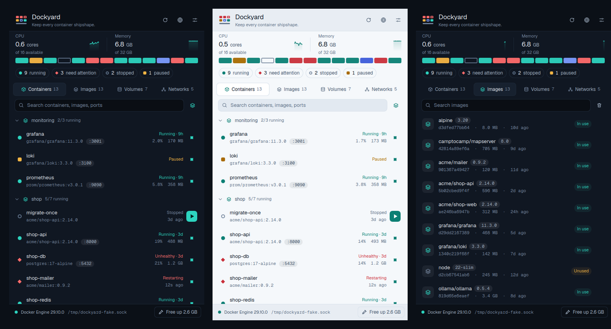
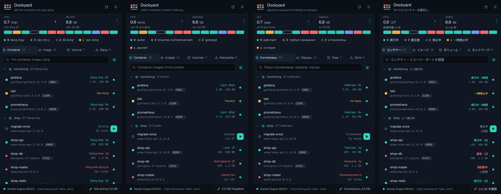

Docker và Podman, gọn gàng ngay trên panel KDE
Dockyard là widget Plasma 6 miễn phí, mã nguồn mở: nhìn thấy mọi container trong một cái liếc, rồi chạy, dừng, khởi động lại, đọc log và dọn dẹp mà không cần rời màn hình làm việc. Dành cho Fedora KDE.
Miễn phí · Giấy phép MIT · Không thu thập dữ liệu · Docker, Docker rootless và Podman

Cả hệ thống container, vẽ như bảng kê hàng hoá trên tàu
- Đang chạy
- Cần chú ý
- Tạm dừng
- Đã dừng
Mỗi ô là một container, đổi màu theo trạng thái. Ô giữ nguyên vị trí khi trạng thái đổi, nên sự cố tự nổi lên mà bạn không phải đi tìm. Bấm vào một ô, danh sách nhảy tới container đó. Mỗi trạng thái còn có hình dạng riêng, nên người khó phân biệt màu vẫn đọc được.
Biết trước khi hỏng
CPU và RAM của mọi thứ đang chạy, kèm biểu đồ lịch sử. Bộ lọc một chạm: đang chạy, cần chú ý, đã dừng. Khi container crash, mất healthy hoặc khởi động lại liên tục, bạn nhận thông báo trên desktop.
- Container được nhóm theo dự án Compose
- Chạy, dừng, khởi động lại cả dự án cùng lúc
- CPU, RAM và mạng trực tiếp theo từng container

Mọi thứ engine đang có
Image, volume và network chỉ cách một tab, có nhãn Đang dùng và Không dùng. Xoá thứ không cần; nếu còn đang dùng, engine từ chối và Dockyard cho bạn biết lý do. Bảng dọn dẹp cho biết mỗi thao tác xoá gì và giải phóng bao nhiêu trước khi bạn xác nhận.
- Image mồ côi và không dùng, volume ẩn danh, cache build
- Volume có tên không bao giờ bị dọn dẹp đụng tới
- Xác nhận hai bước thay cho hộp thoại làm gián đoạn

Bình tĩnh khi có sự cố
Docker chưa chạy, thiếu quyền với socket, chưa cài engine: Dockyard nói rõ chuyện gì xảy ra bằng ngôn ngữ dễ hiểu và đưa đúng cách sửa, kèm nút sao chép hoặc nút khởi động Docker.
- Tự nhận Docker, Docker rootless và Podman
- Mở log trực tiếp, tô màu theo mức lỗi của từng container
- Mở shell trong container chỉ một cú bấm


Nói ngôn ngữ của bạn
Dockyard tự theo ngôn ngữ hệ thống, và nút quả địa cầu trên popup cho phép đổi bất cứ lúc nào. Thêm ngôn ngữ mới chỉ cần sửa một file, không cần viết code.

Đủ đồ nghề trong hộp
- Dải manifest: cả hệ thống là một hàng ô bấm được
- Chỉ số toàn hệ thống: CPU và RAM kèm lịch sử
- Hiểu Compose: nhóm, thu gọn và thao tác theo dự án
- Log trực tiếp: tô màu, tạm dừng, sao chép
- Mở shell: bash hoặc sh trong Konsole
- Cổng bấm được: mở trong trình duyệt hoặc sao chép địa chỉ
- Image, volume, network: nhãn, bộ lọc, xoá an toàn
- Giải phóng dung lượng: có số liệu và giải thích trước khi xác nhận
- Thông báo: crash, health check lỗi, khởi động lại liên tục
- Sáng và tối: theo bảng màu và cỡ chữ của Plasma
- Dễ tiếp cận: điều hướng bằng phím, trạng thái có cả hình dạng
- 9 ngôn ngữ: dịch bằng gettext, dễ mở rộng
Cài trên Fedora KDE chưa đến một phút
Kiểm tra điều kiện
KDE Plasma 6, Python 3 (Fedora có sẵn), và Docker hoặc Podman. Không cần gì thêm.
Cài widget
Cài cho riêng bạn, không cần quyền root.
git clone https://github.com/phuonghx/dockyard cd dockyard && ./install.sh --restartThêm vào panel
Chuột phải panel, chọn Add Widgets, tìm Dockyard rồi kéo vào. Muốn thử trước, chạy plasmawindowed io.dockyard.widget.
Không kết nối được Docker? Thêm bạn vào nhóm docker rồi đăng xuất, đăng nhập lại: sudo usermod -aG docker $USER. Với Podman: systemctl --user enable --now podman.socket.
Cập nhật bằng git pull && ./install.sh. Gỡ bằng ./install.sh --uninstall.
Câu hỏi thường gặp
Dockyard là gì?
Dockyard là widget miễn phí, mã nguồn mở cho KDE Plasma 6. Nó nằm trên panel của bạn để theo dõi và quản lý container, image, volume, network của Docker hoặc Podman, đọc log và giải phóng dung lượng đĩa, không cần mở terminal hay một ứng dụng nặng nề.
Dockyard có dùng được với Podman không?
Có. Nó tự tìm Docker, Docker rootless và socket tương thích Docker của Podman, hoặc bạn đặt đường dẫn socket trong phần cài đặt của widget.
Hỗ trợ hệ thống nào?
Mọi máy Linux chạy KDE Plasma 6, đã thử trên Fedora KDE. Đây là widget của Plasma nên không chạy trên GNOME hay môi trường desktop khác.
Có cần Docker Desktop hay phần mềm khác không?
Không. Bạn chỉ cần Python 3 và một engine Docker hoặc Podman đang chạy. Dockyard nói chuyện trực tiếp với socket cục bộ của engine.
Có an toàn không? Có gửi dữ liệu đi đâu không?
Dockyard không có telemetry và không gửi gì ra ngoài, chỉ nói chuyện với socket engine trên máy bạn. Giấy phép MIT, mã nguồn công khai trên GitHub. Lưu ý quyền truy cập socket Docker tương đương root, như mọi công cụ Docker.
Làm sao để có quyền dùng Docker?
Thêm tài khoản vào nhóm docker bằng sudo usermod -aG docker $USER rồi đăng xuất, đăng nhập lại. Dockyard hiện đúng lệnh này khi phát hiện vấn đề.
Tôi có thể dịch sang ngôn ngữ của mình không?
Được. Tạo bản mẫu bằng tools/i18n.sh new <mã ngôn ngữ>, dịch file bằng bất kỳ trình soạn thảo nào rồi mở pull request. Không cần biết lập trình. Xem mục Translating trong CONTRIBUTING.md.
Miễn phí và mã nguồn mở
Dockyard dùng giấy phép MIT. Hoan nghênh báo lỗi, ý tưởng, bản dịch và pull request.
Tác giả
Xuan-Phuong Hoang, một lập trình viên muốn Docker trên panel Fedora KDE của mình trông và hoạt động như một phần của hệ thống.